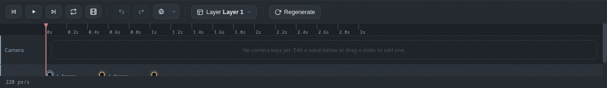

Keyframes
Adding, selecting, moving, retiming, replacing and deleting frames.
Add a keyframe
Drag an image from the assets panel onto a layer track, at the moment you want it. The image becomes a keyframe chip, and it will hold that pose until you say otherwise.
Select and inspect
Click a chip to select it. The selection panel on the right shows:
- a thumbnail of the frame
- the exact time
- the blend mode
- buttons to replace or delete the frame

Move and resize
Drag a chip left or right to change when it happens. Drag its edges to change how long the frame holds before the gap starts. Hold times set the pacing: hold a pose for a beat, or shorten it to a blink.

Set the time exactly
With a keyframe selected, type the time in seconds into the selection panel. Use the playhead and the frame counter to find the exact moment you want.
Replace or delete
Replace imageswaps in different art while keeping the timing, so you can reuse a shot with a new drawing.Deleteremoves the keyframe. The Delete or Backspace key does the same thing and is faster.